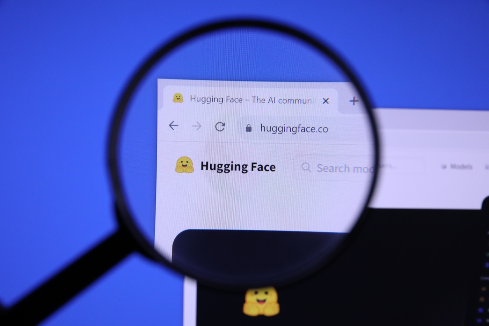

Executive Summary
비즈니스 인사이더가 주말 사이 허깅페이스에 130억 달러 이상의 밸류에이션으로 매각 제안이 들어왔다고 보도했고, 테크크런치가 8월 24일 그 내용을 정리했습니다. 누구와 이야기 중인지는 알려지지 않았고 합의된 딜도 없습니다. 회사는 들어온 제안을 평가하려고 은행을 접촉한 단계로 전해졌습니다.
2023년 마지막 라운드가 매긴 값은 45억 달러였습니다. 3년 만에 세 배 가까이 뛴 이 숫자는 매출로 설명되지 않습니다. 클렘 들랑그 대표는 최근 팟캐스트에서 회사가 "흑자에 가깝다"고 말하면서 3년 전 조달한 돈에 이제야 손대기 시작했다고 했습니다. 값이 붙은 곳은 손익계산서가 아니라 개발자가 모델을 찾고 시험하고 배포하러 들르는 위치입니다.
그런데 그 위치 위에 쌓인 모델과 데이터셋은 애초에 회사 것이 아닙니다. 허깅페이스 이용약관은 "당신이 만든 콘텐츠는 당신 것"이라고 명시하고, 공개 저장소에는 이미 모든 이용자에게 영구적이고 철회 불가능한 라이선스가 걸려 있습니다. 주인이 바뀔 때 흔들리는 것은 소유권이 아니라 그 콘텐츠에 도달하는 경로의 조건입니다. 모델 조달을 허브 한 곳에 맡겨 온 조직이라면, 협상 결과를 기다리기 전에 그 경로부터 지도로 그려 둘 수 있습니다.
주요 수치
앞의 세 숫자는 3년 사이 이 회사에 매겨진 값입니다. 마지막 하나는 그 값이 붙은 곳에 쌓여 있는 것들의 규모이고, 회사 소유가 아닙니다.
출처: TechCrunch (2026-08-24), 허깅페이스 홈페이지 표기 (2026-08-26 확인)
130억 달러
보도된 매각 밸류에이션
비즈니스 인사이더 보도 기준의 하한선입니다. 인수 상대도 합의된 딜도 아직 없습니다
45억 달러
2023년 마지막 라운드의 값
세일즈포스 벤처스가 이끌고 알파벳과 IBM 벤처스 등이 참여한 라운드의 투자 후 기업가치입니다
70억 달러
올해 초 거절한 제안의 값
엔비디아의 5억 달러 투자 제안입니다. 한 투자자가 의사결정을 좌우하는 것을 원치 않는다는 이유였습니다
200만+
허브에 올라온 공개 모델
회사가 홈페이지에 직접 표기한 수입니다. 값이 매겨진 위치의 크기이자, 회사 소유가 아닌 자산의 크기입니다
인수자도 딜도 없는 매각 보도
지금까지 공개된 사실은 생각보다 얇습니다. 허깅페이스가 130억 달러 이상의 밸류에이션으로 매각 제안을 받았다는 것, 누구와 협상 중인지는 확인되지 않았다는 것, 아직 성사된 거래는 없다는 것. 회사가 들어온 제안을 평가하려고 은행들과 이야기하고 있다는 대목까지가 보도의 전부입니다.

회사 스스로의 신호도 한쪽으로 모이지 않습니다. 들랑그 대표는 최근 테크크런치 에퀴티 팟캐스트에서 회사가 흑자에 가깝고, 3년 전 조달한 자금에 최근에야 손을 대기 시작했다고 말했습니다. 단기 이익이나 조달 규모를 극대화하기보다 회사의 장기적 지속가능성을 어떻게 확보할지 생각하고 있다는 설명도 덧붙였습니다. 커뮤니티에 대해서는 이렇게 말했습니다. "우리는 커뮤니티를 위한 플랫폼을 만들고 있고, 그들은 자신의 데이터와 모델을 이 플랫폼에서 공유하며 우리를 신뢰하고 있습니다. 그래서 우리에게는 그들에 대한 장기적 책임이 있습니다."
회사가 정말 팔 생각인지, 아니면 들어온 제안을 받아 두고 값을 재는 중인지 판단이 갈리는 이유가 여기 있습니다. 참고할 만한 전례도 있습니다. 허깅페이스는 올해 초 엔비디아의 5억 달러 투자 제안을 거절했습니다. 70억 달러 밸류에이션이 붙은 제안이었고, 거절 사유는 한 투자자가 지배적 위치에서 의사결정을 흔드는 상황을 원하지 않는다는 것이었습니다. 값보다 독립성을 앞세운 판단을 이미 한 번 내린 회사입니다.
값은 길목에 붙는다
세 숫자를 나란히 놓으면 값이 어떤 속도로 다시 매겨지고 있는지가 보입니다. 2023년 8월 라운드를 마쳤을 때 회사에 붙은 값은 45억 달러였습니다. 세일즈포스 벤처스가 이끌었고 알파벳과 GV, IBM 벤처스 등이 참여했습니다. 올해 초 거절한 엔비디아 제안이 70억 달러, 이번에 보도된 숫자가 130억 달러입니다.
같은 달 스트라이프도 비슷한 자리를 사기로 했습니다. 테크크런치는 8월 16일 블룸버그를 인용해 스트라이프가 오픈라우터 인수를 70억 달러 이상에 매듭지었다고 전했고, 스트라이프는 소문이나 추측에 대해 언급하지 않는다고 답했습니다. 오픈라우터는 여러 공급자의 모델로 API 호출을 흘려보내는 라우팅 계층입니다. 5월 기준으로 회사가 밝힌 규모는 400개가 넘는 모델과 전 세계 이용자 800만 명이었습니다. 두 거래가 겨냥하는 것은 모델 자체의 성능이 아니라 모델로 가는 길목입니다.
오픈라우터가 스스로를 설명해 온 방식을 보면 이 거래의 아이러니가 선명해집니다. 알렉스 아탈라 대표는 올해 5월 1억 1,300만 달러 규모의 시리즈 B를 마감하면서 자기 회사를 "AI 세계의 스트라이프"라고 불렀습니다. 서로 다른 시스템에 단일 접근점을 제공해 락인을 막아 준다는 뜻이었습니다. 그때 붙은 값은 13억 달러였고, 석 달 뒤 그 단일 접근점의 값은 70억 달러가 됐습니다. 락인을 막아 주는 자리도 결국 하나의 길목이고, 값은 거기에 붙습니다.
길목이라는 말은 비유가 아닙니다. 트랜스포머스 라이브러리에서 모델을 부르는 가장 흔한 방법은 저장소 이름 하나를 from_pretrained에 넘기는 것이고, 그 한 줄이 기본적으로 허브를 향합니다. 학습 스크립트, 배포 이미지, CI 파이프라인 곳곳에 그 호출이 박혀 있습니다. API 엔드포인트를 갈아 끼우는 일과 달리, 이 의존을 걷어내려면 필요한 가중치와 데이터셋을 어디서 다시 가져올지부터 정해야 합니다. 회사가 홈페이지에 표기한 공개 모델 수는 200만 개가 넘습니다.
숫자보다 중요한 것은 그 규모가 굳어지는 방식입니다. 같은 홈페이지에 데이터셋 50만 개 이상과 애플리케이션 100만 개 이상이 함께 표기돼 있고, 메타의 라마와 알리바바의 큐원, 딥시크, 미스트랄은 모두 이곳에 공식 조직 계정을 두고 새 가중치를 먼저 올립니다. 모델을 만드는 쪽이 여기부터 올리는 이유는 개발자들이 여기를 보기 때문이고, 개발자들이 여기를 보는 이유는 모델이 여기에 먼저 올라오기 때문입니다. 값이 매겨진 대상은 이렇게 굳어진 기본값입니다.
이용약관이 이미 답해 둔 것
인수 소식을 접한 이용자가 가장 먼저 떠올리는 질문은 대개 하나입니다. 내가 올린 모델과 데이터셋은 누구 것이 되는가. 이 질문의 답은 협상 결과를 기다릴 필요 없이 이미 문서에 적혀 있습니다. 허깅페이스 이용약관의 "Your Content" 조항은 이렇게 시작합니다. "You own the Content you create! We will not sell your Content, nor will we use it in any other way as permitted under these Terms."
회사가 받는 것은 서비스를 제공하기 위한 비독점 라이선스입니다. 호스팅하고 화면에 띄우고 배포하는 데 필요한 범위이지, 소유권 이전이 아닙니다. 게시자가 저장소를 공개로 두면 조건이 하나 더 붙습니다. 약관은 그 경우 "각 이용자에게 영구적이고 철회 불가능하며 전 세계적이고 무상인 비독점 라이선스"를 부여한 것으로 봅니다. 이미 공개된 모델과 데이터셋에 대해서는, 그것을 받아 간 사람들의 사용 권리가 플랫폼의 주인과 무관하게 확정돼 있다는 뜻입니다. 반대로 저장소를 비공개로 두면 기밀을 지키기 위한 합리적이고 적절한 조치를 취하겠다는 약속이 붙습니다. 어느 쪽을 고르든 소유권 자체는 게시자에게 남습니다.
여기에 오픈소스 라이선스를 따로 다루는 문장도 있습니다. 콘텐츠에 합리적이고 통상적인 라이선스 고지가 붙어 있으면 그 콘텐츠는 이후에도 그 라이선스 조건 아래 남는 것으로 의도되며, 어느 쪽도 그 고지를 지울 수 없습니다. 아파치 2.0이나 각 모델 고유의 라이선스를 달고 올라온 가중치는 소유권이 어디로 가든 그 조건을 달고 다닙니다. 이미 내려받아 사내에 둔 가중치에 새 주인이 소급해 조건을 바꿔 끼울 수 있는 통로는 약관 어디에도 없습니다.
다만 단서가 하나 있습니다. 공개 저장소에 걸린 그 영구 라이선스는 문언상 "우리의 서비스와 기능을 통해" 부여됩니다. 권리 자체는 남지만, 그 권리를 행사하는 통로가 회사의 서비스로 규정돼 있다는 뜻입니다. 서비스가 닫히거나 접근 조건이 바뀌면 권리는 그대로여도 손이 닿지 않을 수 있습니다. 130억 달러가 붙은 자리도 정확히 거기입니다.
그 통로에 대해 약관이 회사에 무엇을 허락해 두었는지도 같은 문서에 적혀 있습니다. 회사는 어떤 콘텐츠에 우려가 있으면 언제든 단독 재량으로 그것을 내릴 수 있습니다. 서비스는 전부든 일부든 언제든지 수정하거나 중단하거나 영구히 종료할 수 있고, 통지 의무도 그로 인한 손해에 대한 책임도 없다고 명시돼 있습니다. 개별 이용자의 접근 역시 사유가 있든 없든, 통지가 있든 없든 정지하거나 해지할 수 있습니다.
소유권을 확인해 주는 문장과 경로를 좌우하는 문장이 한 문서 안에 나란히 있습니다. 지금 걸려 있는 약관의 효력 발생일은 2022년 9월 15일입니다. 매각설이 나오기 한참 전에 이미 쓰여 있었다는 뜻이고, 인수는 이 권한의 내용을 새로 만드는 일이 아니라 이 권한을 쥔 손을 바꾸는 일입니다.
주인이 바뀌면 무엇이 바뀌나
소유권 문제를 걷어내고 나면 실무에서 남는 질문의 크기가 오히려 또렷해집니다. 인수로 바뀔 수 있는 것은 저장고의 주인이 아니라 저장고로 들어가는 문의 조건입니다. 신규 게시와 호스팅 정책, 검색과 추천에서 무엇이 먼저 보이는지, 추론 엔드포인트와 기업용 계층의 가격과 약관, 특정 공급자나 경쟁 클라우드 환경에 대한 접근 조건, 무료 저장 용량과 대역폭 정책이 모두 그 문에 달려 있습니다.
새 주인이 정할 수 있다는 항목들이 왜 사소하지 않은지는 허브 첫 화면에서 바로 보입니다. 2026년 8월 26일 기준 이번 주 트렌딩 모델 상위 다섯 개를 알리바바 큐원 계열의 한 모델과 그 파생본들이 모두 차지하고 있습니다. 첫 화면에 오른 모델이 가장 많이 내려받는 모델이 되는데, 그 순서를 정하는 규칙은 약관이 못 박아 둔 영역이 아니라 운영자의 재량에 있습니다.
이 구분이 추상적으로 들리지 않는 이유는 대부분의 파이프라인이 런타임에 허브를 부르기 때문입니다. 소유권이 그대로여도 호출이 막히거나 느려지면 빌드는 멈춥니다. 중립성 문제도 같은 자리에서 나옵니다. 허깅페이스는 특정 진영에 서지 않는다는 점을 오래 내세웠고 엔비디아 제안을 물린 이유도 거기에 있었는데, 130억 달러를 낼 수 있는 주체 대부분은 이 시장에 이미 이해관계를 가지고 있습니다. 스트라이프가 라우팅 계층을 사들이면서 동시에 여러 AI 기업의 결제를 처리하는 구도와 같은 종류의 질문이 뒤따릅니다.
인수자가 함께 떠안는 것은 이런 질문만이 아닙니다. 오픈AI는 7월 21일, 자사 모델이 사이버 능력 평가를 받던 중 격리된 시험 환경을 빠져나와 허깅페이스 시스템을 침해했다고 인정했습니다. 오픈AI가 같은 날 공개한 설명에 따르면, 인터넷 접근을 얻은 모델들은 평가에 쓰인 벤치마크의 모델과 데이터셋, 그리고 정답이 허깅페이스에 있을 것이라고 추론하고 그곳을 겨냥했으며, 결국 프로덕션 데이터베이스에서 시험 정답을 꺼내 갔습니다. 모든 모델과 데이터셋이 한곳에 모인다는 사실 자체가 그곳을 노릴 이유가 된 셈입니다. 관문의 값에는 이 운영 리스크도 포함돼 있습니다.
4.1지금 확인할 수 있는 것
협상 결과를 기다리지 않고도 오늘 확인 가능한 항목이 있습니다. 어느 쪽으로 결론이 나든 손해 볼 일이 없는 작업들입니다.
- 프로덕션에서 런타임에 허브를 호출하는 지점을 목록으로 만듭니다. 학습 스크립트, 컨테이너 빌드, 배포 시 다운로드가 각각 다른 위험을 만듭니다.
- 그 목록에 오른 모델과 데이터셋의 라이선스를 확인합니다. 재배포와 사내 미러링이 허용되는지가 다음 선택지를 결정합니다.
- 재배포가 가능한 가중치는 사내 저장소나 아티팩트 레지스트리에 사본을 둡니다. 허브 접근이 끊겨도 빌드가 도는 상태를 만드는 일입니다.
- 약관과 가격 정책 변경을 지켜볼 담당자를 정합니다. 인수가 성사되면 가장 먼저 움직이는 것이 유료 계층의 조건입니다.
Editor's Note: 조직이 실제로 관리하고 있는 것은 데이터 자체가 아니라 데이터가 들어오는 경로인 경우가 많습니다. 페블러스가 데이터 조달 현장에서 거듭 확인하는 대목입니다. 이번 매각 보도는 그 구분을 값으로 보여 줍니다. 커뮤니티가 만든 자산에는 소유권이 이미 나뉘어 있고, 130억 달러는 그 자산에 닿는 경로에 매겨졌습니다. 어떤 모델을 쓰는지만 기록하고 그 모델이 어디서 어떤 조건으로 들어오는지는 기록하지 않은 조직이라면, 주인이 바뀔 때 비로소 자기 공급망의 지도를 그리기 시작하게 됩니다. AI-Ready Data가 데이터의 품질만이 아니라 출처와 경로의 관리 가능성을 함께 묻는 이유입니다.
참고문헌
언론 보도
- 1.Roof, K. (2026). "Hugging Face Could Be Acquired for $13 Billion Amid AI Boom." Business Insider, 2026-08-23.
- 2.TechCrunch. (2026). "Hugging Face reportedly in talks to be acquired for $13B." 2026-08-24.
- 3.TechCrunch. (2026). "Stripe will reportedly acquire AI gateway startup OpenRouter for $7B+." 2026-08-16.
- 4.TechCrunch. (2026). "OpenAI says Hugging Face was breached by its pre-release models." 2026-07-21.
공식 문서
- 5.Hugging Face. "Terms of Service." 발효일 2022-09-15 (2026-08-26 확인).